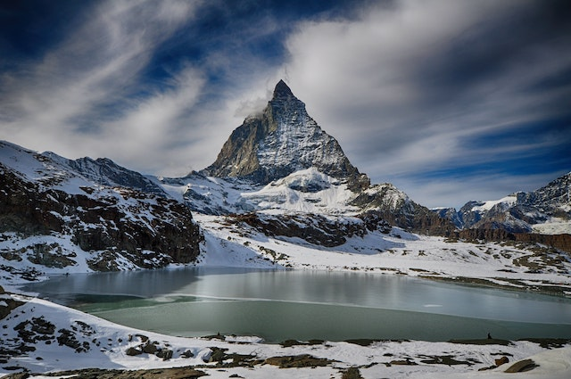

Cervino (Cervin in francese - pron. AFI: [sɛʁvɛ̃]; Matterhorn in tedesco; Gran Becca in patois valdostano; Matterhòre in Greschòneytitsch) è una montagna delle Alpi alta 4478 m s.l.m., settima vetta e terza montagna italiana per altitudine, situato nelle Alpi Occidentali (Alpi Pennine - Alpi del Weisshorn e del Cervino - catena Catena Bouquetins-Cervino), lungo il confine tra Italia e Svizzera (a ovest del massiccio del Monte Rosa, a est del Grand Combin e a sud-ovest del Massiccio del Mischabel).
Con una prominenza di 1031 m (è necessario scendere fino al Col Durand, posto a 3451 m, per salire su vette più alte) e un isolamento di 13,7 km (la montagna più alta di esso più vicina è il Lyskamm Occidentale a quota 4481 m, nel massiccio del Monte Rosa), si erge isolato dal resto delle altre vette circostanti e sovrasta i paesi di Breuil-Cervinia a sud in Italia e di Zermatt a nord in Svizzera, note località turistiche estive e invernali.
Caratterizzato dalla particolare forma piramidale molto pronunciata, ha segnato in modo significativo la storia dell'alpinismo: la sua parete nord è infatti una delle classiche pareti nord delle Alpi e attorno a esso si sviluppa il comprensorio sciistico del Matterhorn Ski Paradise, con possibilità di sci estivo sul ghiacciaio del Plateau Rosa.